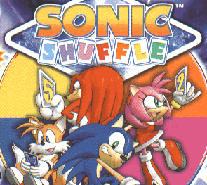

Universal Form!
Sonic Shuffle
*Sega Dreamcast*

Music | Cheats and Tips | Boxes
You are listening to: Battle of Bloom - John Weeks
Contents
*Introduction*
*Release Date Facts*
*In Depth Information*
1 | 2 | 3 | 4 | 5 | 6 | 7 | 8 | 9 | 10
 |
The first Sonic game on the Dreamcast to head away from all the platforming business that normally occurs in Sonic's history. Sonic Shuffle, originally titled Sonic Square, was created by members from the same team that helped Nintendo build Merio Party. Hence the similarity in the two games.
The game sees Sonic, Amy, Tails and Knuckles warped to a mystical land called Maginaryworld, where people's dreams come true, if you excuse the horrible cliche. A magical fairy called Lumina explains why the Sonic gang have ended up in Maginaryworld. An evil being, Void, is set to destroy the Precioustones, which is basically the source of power for Maginaryworld. If the Precioustones are destroyed, the magical land will cease to exist, and people will have nightmares (shame).
As all goos heros do, Sonic and the team accept their challenge, and funnily enough, Eggman manages to get in your way also. so they all go to defeat Void, protect the Precioustones and restore Illumina, a kind of Goddess type thing. :P
|
Released:
March 2001
Starring:
Sonic, Tails, Amy, Knuckles
|
| | | | |
First Appearances of:
Lumina, Void, Illumina, Precioustones, Maginaryworld, Party/Board Game genre. |
*In Depth Information*